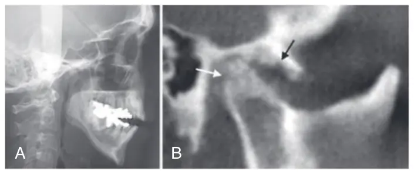
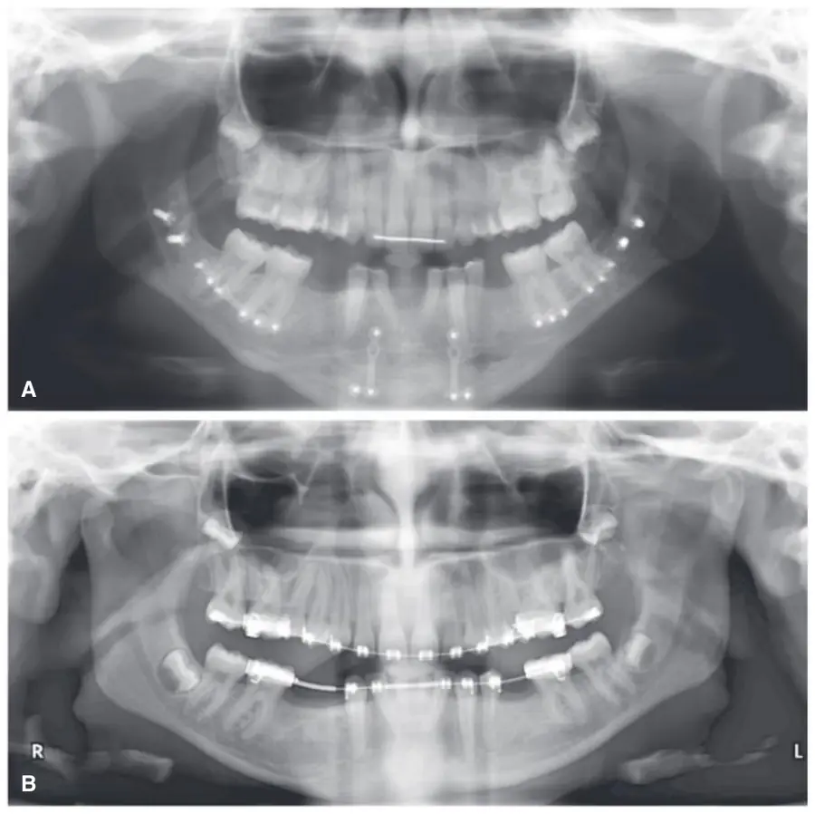

نسخه استخراجشده؛ ترجمه یا تأیید علمی انجام نشده است. وضعیت: captured
در آرتریت روماتوئید، مقصر یک توده است: «یافتههای تصویری مشخصه نتیجهی التهاب و هایپرتروفی سینوویومند، که به یک تودهی تخریبی — پانوس — تبدیل میشود که به درون فیبروکارتیلاژ و استخوان زیرغضروفی مفصل رشد میکند و فرسایش سطوح مفصلی و ساختار استخوانی زیرین میسازد.»

و اعداد کلیدی: «TMJ در حدود نیمی از بیماران مبتلا درگیر میشود.» RA در زنان شایعتر است و در هر سنی رخ میدهد ولی بروزش با سن افزایش مییابد. معمولاً مفاصل کوچک دست، مچ، زانو و پا به شکل دوطرفه و متقارن درگیر میشوند، و «درگیری TMJ وقتی رخ دهد اغلب دوطرفه است و دیرتر از دیگر مفاصل اتفاق میافتد».
و چرا چانه عقب میرود: «چانه عقبرفته به نظر میرسد، و اوپن بایت قدامی یافتهی شایعی است، چون کندیلها با تخریب پیشروندهی سطوح مفصلی استخوان در موقعیت قدامی-فوقانی مینشینند.»
و مشهورترین نشانهی این بخش: «فرسایش سطوح قدامی و خلفی کندیل — جایی که پوشش سینوویال با استخوان تماس میگیرد — میتواند به ظاهر «مداد تراشیده» در کندیل بینجامد.» و در موارد شدید «کل سر کندیل تخریب میشود و تنها گردن بهعنوان سطح مفصلی باقی میماند».
و نقش هر روش: MRI میتواند پانوس، افیوژن، ادم مغز استخوان و ناهنجاریهای دیسک را نشان دهد — و «این نشانهها میتوانند بر تغییرات استخوانی مقدم باشند». گادولینیوم کشف پانوس را بهتر میکند چون پانوس بهدلیل پرعروقی بافت ملتهب سیگنال بالا میسازد.
و ادم مغز استخوان روی T2 به شکل سیگنال افزایشیافته در استخوان اسفنجی دیده میشود و «میتواند نشانهی زودهنگام تخریب آیندهی استخوان باشد». CT ارزیابی دقیقتری از تغییرات استخوانی میدهد، از جمله استئوپنی پریآرتیکولار.
و افتراق RA از DJD شدید: «استئوپنی پریآرتیکولار و فرسایشهای شدید، بهویژه در برجستگی مفصلی، بیشتر مشخصهی RA هستند. درگیری دیگر مفاصل هم به آن اشاره دارد — و به همین دلیل، ارجاع به پزشک بیمار در صورت شک به RA ضروری است.»
و حالا JIA — با تفاوتهایی که باید بدانی: بیماری التهابی روماتولوژیک مزمنی که پیش از ۱۶ سالگی با میانگین سنی ۵ سال بروز میکند. «رفاکتور روماتوئید ممکن است غایب باشد؛ از اینرو اصطلاح JIA بر «RA نوجوانان» ترجیح دارد.» و «JIA از RA بزرگسال در این تفاوت دارد که سن شروع زودتر است و درگیری سیستمیک معمولاً شدیدتر». درگیری TMJ در حدود ۴۰٪ بیماران، و میتواند یکطرفه یا دوطرفه باشد.
و خطرناکترین ویژگی بالینی JIA: «TMJ این بیماران اغلب بیعلامت است، حتی وقتی بیماری فعال مفاصل را درگیر کرده.» و درگیری شدید TMJ به مهار رشد مندیبل میانجامد؛ از دست رفتن ساختار استخوانی همراه با مهار رشد میتواند به میکروگناتی و چرخش خلفی-تحتانی چانه و در نتیجه اوپن بایت قدامی بینجامد. و «درجهی میکروگناتی متناسب با شدت درگیری مفصل است و با شروع زودتر بیماری بدتر میشود».
و روش انتخابی JIA: «MRI با مادهی حاجب گادولینیوم روش انتخابی برای ارزیابی بیماران JIA است، چون میتواند التهاب سینوویال زودهنگام را حتی در بیماران بیعلامت و پیش از تخریب استخوان نشان دهد.» و پانورامیک و سفالومتری برای ارزیابی اختلالات رشد مفیدند.
و یافتههای تصویری JIA: استئوپنی اجزای مفصل ممکن است تنها یافتهی رادیوگرافیک اولیه باشد، فرسایش برجستگی مفصلی میتواند به ظاهر حفرهی گلنوئید بزرگ بینجامد، کندیل میتواند نوکتیز (مدادیشکل) یا مقعر یا کاملاً تخریبشده باشد، و «سر کندیل معمولاً در موقعیت قدامی-فوقانی در حفرهی مندیبولار قرار میگیرد».
و یک ویژگی زیبا که ماهیت متناوب بیماری را لو میدهد: «چون پاسخ التهابی متناوب است، کورتکس سطوح مفصلی میتواند در دورههای خاموشی دوباره ظاهر شود، و سطوح مسطح به نظر برسند.»
و دو آرتریت سرونگاتیو: آرتریت پسوریاتیک در بیماران با پسوریازیس پوستی رخ میدهد و بیماری التهابی مفصل در ۷٪ آنها دیده میشود، اسپوندیلیت آنکیلوزان عمدتاً در مردان و به فیوژن ستون فقرات پیش میرود. «تغییرات تصویری TMJ در این اختلالات میتواند از تغییرات RA غیرقابل تفکیک باشد، هرچند گاهی در آرتریت پسوریاتیک یک تغییر اسکلروتیک عمیق دیده میشود.»
تحلیل ایدیوپاتیک کندیل (ICR) با یک تعریف حذفی شناخته میشود: «وضعیتی که به از دست رفتن تودهی استخوانی کندیل مندیبل میانجامد و به دیگر وضعیتهای تخریبی — یعنی DJD، RA یا آرتریت سپتیک — نسبتدادنی نیست.»

و الگوی زمانیاش ویژه است: «در دههی نخست رشد، کندیل مندیبل طبیعی به نظر میرسد، ولی تحلیل قابل توجه سر کندیل معمولاً در نوجوانی رخ میدهد.»
و پروفایل خطر: «تصور میشود نتیجهی کاهش سازگاری زیستی با بارگذاری مکانیکی افزایشیافته در جمعیت مستعدی از زنان جوان باشد.» تأثیر هورمونی مطرح شده ولی نقش استروژن ثابت نشده. و «همراهی با روابط اسکلتال خاص، یعنی زاویهی تند صفحهی مندیبولار و رابطهی فکی کلاس II، گزارش شده است». جابهجایی دیسک هم میتواند عامل خطر باشد.
و یک هشدار درمانی که مستقیماً به کار ارتودنتیست و جراح میآید: «بسیاری از موارد پس از جراحی ارتوگناتیک گزارش شدهاند.» و در مدیریت: «مدیریت ICR دشوار است چون جراحی ارتوگناتیک و درمان ارتودنسی که برای اصلاح اختلافات اکلوزال یا عدم تقارن انجام میشوند میتوانند وضعیت را تشدید کنند. عود پس از جراحی ارتوگناتیک شایع است.»
و ظاهر تصویریاش یک تشبیه بهیادماندنی دارد: روی پانورامیک، کندیل اغلب مسطح شدن و طویل شدن ظاهری سطح قدامی نشان میدهد با انحراف خلفی سر و گردن کندیل. و ممکن است خمیدگی سطح خلفی راموس هم باشد. «این ویژگیها با هم بهعنوان ظاهر «قارچ سمی» توصیف شدهاند.»
و پیامد رشدیاش: «هایپوپلازی ثانویهی مندیبل همان سمت بهدلیل از دست رفتن مرکز رشد طبیعی درون کندیل مبتلا دیده میشود. این با کوتاه شدن راموس و عمیق شدن نچ آنتهگونیال آشکار میشود.» و با از دست رفتن ارتفاع عمودی کندیل، اوپن بایت قدامی پدید میآید.
و افتراقش، یک اعتراف صادقانه است: «هیچیک از ویژگیهای رادیولوژیک ICR منحصر به این وضعیت نیست؛ بلکه با دیگر وضعیتهای آرتریتی TMJ همپوشانی دارند. تشخیص نیازمند در نظر گرفتن تظاهر بالینی همراه با ویژگیهای تصویری و حذف دیگر تشخیصهای ممکن است.»
و حالا آرتریت سپتیک — نادر، ولی فوری. «در مقایسه با بروز DJD و RA در TMJ، آرتریت سپتیک نادر است.» راههای رسیدن عفونت: گسترش مستقیم از سلولیت مجاور، از عفونتهای پاروتید، گوش یا ماستوئید، با گسترش مستقیم استئومیلیت بدنه و راموس، و گسترش خونی از کانونی دور و اغلب پنهان. تروما و سرکوب ایمنی هم عوامل بالقوهاند.
و پروفایل بالینی: «هر سنی میتواند مبتلا شود ولی تمایل به مردان جوان دارد. معمولاً یکطرفه رخ میدهد.» بیمار میتواند قرمزی و تورم روی مفصل، تریسموس، درد شدید هنگام باز شدن، ناتوانی در اکلوژن دندانها، غدد لنفاوی گردنی بزرگ و حساس، و تب و بیحالی داشته باشد. و «مندیبل میتواند بهدلیل افیوژن مفصلی به سمت غیرمبتلا منحرف شود».
و مهمترین نکتهی زمانی این درس: «در مراحل حاد بیماری ممکن است هیچ نشانهی تصویری حاضر نباشد» — هرچند فضای میان کندیل و سقف حفره میتواند بهدلیل اگزودای التهابی پهن شود. و «تغییرات استخوانی آشکارتر تقریباً ۷ تا ۱۰ روز پس از شروع علائم بالینی دیده میشوند».
و کدام نشانهها علت عفونی را لو میدهند؟ برخی تغییرات DJD را تقلید میکنند — از دست رفتن تعریف کورتکس مفصلی و فرسایش سطوح. ولی «سکستر و استخوانسازی نو پریوستئال بیشتر به علت عفونی اشاره دارند».
و نقش پزشکی هستهای: تصویربرداری استخوان با ۹۹mTc افزایش متابولیسم استخوانی را نشان میدهد، و «معاینهی مثبت با گالیم (۶۷Ga) میتواند حضور عفونت را تأیید کند». و تشخیص ایدهآل با «شناسایی ارگانیسم در آسپیرهی مفصلی» است، هرچند کشت گاهی منفی میماند.
و پیامد درازمدتش: «DJD یک عارضهی درازمدت شایع است، و انکیلوز فیبروز یا استخوانی میتواند پس از فروکش کردن عفونت رخ دهد.»